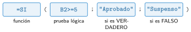
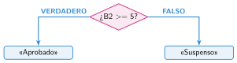
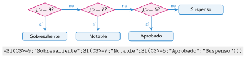

Decidir con la función SI
Criterios: 3b
🤔 Pienso10 min
Qué hago aquí: Piensa un momento y contesta con lo que ya sabes. No pasa nada si no lo sabes: es para empezar.
Una tienda hace un 15 % de descuento a quien paga al contado. Escribe la regla con las palabras si, entonces y si no.
📖 Leo y aprendo40 min
Qué hago aquí: Lee despacio, mira los dibujos y los ejemplos, y quédate con la idea clave del final.
Para comparar dos datos se usan los operadores de comparación. El resultado es VERDADERO o FALSO.
= | <> | > | < | >= | <= |
|---|---|---|---|---|---|
| igual | distinto | mayor | menor | mayor o igual | menor o igual |
La función SI comprueba una condición (la prueba lógica) y da un resultado si es verdadera y otro si es falsa.


Para elegir entre más de dos resultados, se mete un SI dentro de otro: es un SI anidado. Excel prueba las condiciones en orden y se queda con la primera verdadera.

Para juntar varias condiciones:
Y(cond1; cond2) es VERDADERO si se cumplen todas.
O(cond1; cond2) es VERDADERO si se cumple alguna.
=SI(prueba; si es verdadero; si es falso). Para más de dos casos, un SI dentro de otro, del más alto al más bajo.✏️ Hago160 min
Qué hago aquí: Haz las actividades en orden. Empieza siempre por las básicas.
B2 vale 4 y C2 vale 7. ¿Qué da cada fórmula?
Con la función SI, escribe «sí» si el valor es mayor que 0 y «no» si no lo es.
Calcula la comisión de cada vendedor: un 10 % si vende 50 000 € o más y un 2 % si vende menos. Los porcentajes están en dos celdas aparte (usa $).
Calcula el descuento del 15 % para los clientes que pagan al contado.
Escribe la calificación de cada alumno con un SI anidado: Sobresaliente (9 o más), Notable (de 7 a 8,99), Bien (de 6 a 6,99), Suficiente (de 5 a 5,99) e Insuficiente (menos de 5).
Becas. Un alumno tiene beca si su nota final es 8 o más y no tiene faltas sin justificar. Escribe la fórmula si la nota está en B2 y las faltas en C2.
🚀 Amplío (si quieres saber más)
Qué hago aquí: ¿Has terminado? Lee la curiosidad o elige el reto. Es voluntario.
El porcentaje de beca depende de la nota: 80 % con 9,5 o más; 40 % con 8,5 o más; 25 % con 8 o más; y «NO BECA» con menos. Escríbelo con SI anidado y con SI.CONJUNTO.
✅ Compruebo10 min
Qué hago aquí: Contesta sin mirar la ficha y marca cómo lo llevas.